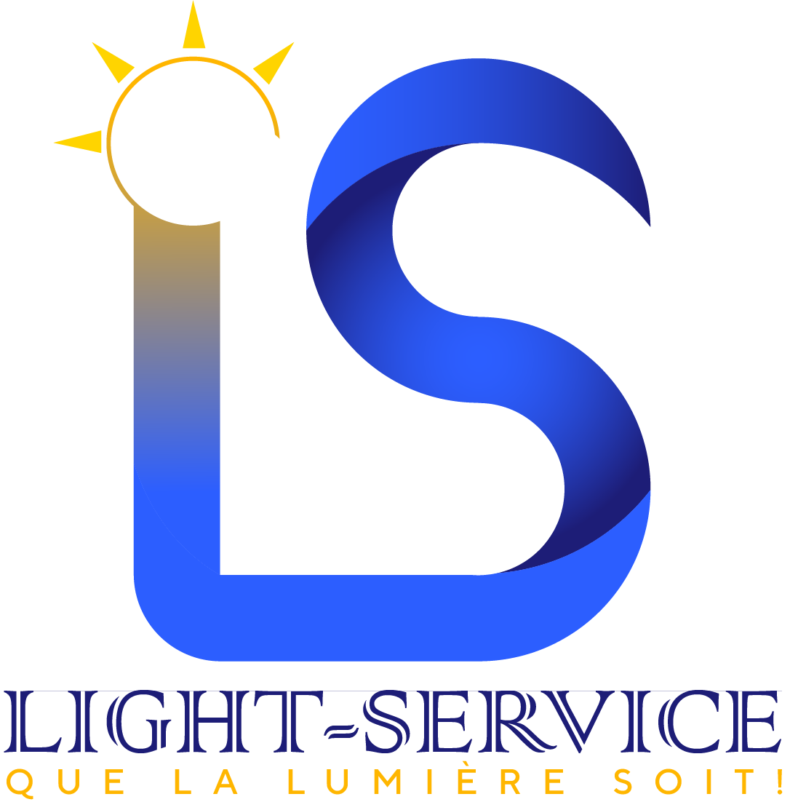
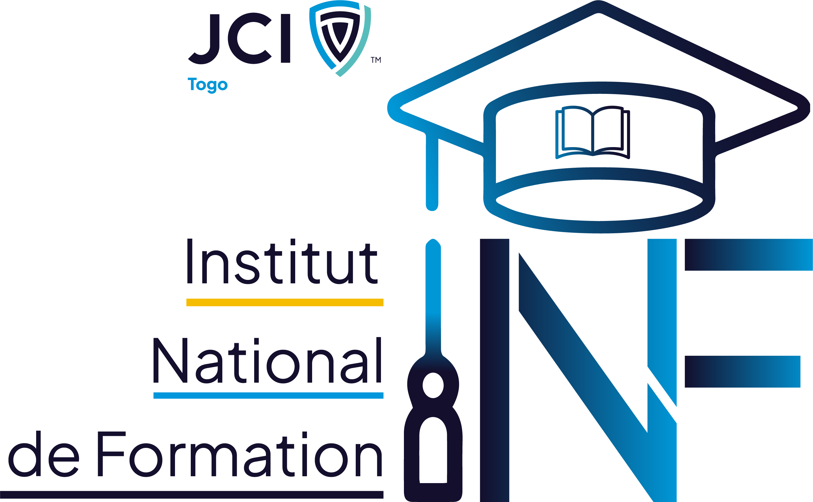

🤝
Partenaire
Partenaire VIP

lightbulb
Pour payer votre cotisation, veuillez contacter directement la Trésorerie Générale. Elle vous guidera pour le paiement et vous fournira votre reçu.
phoneAppeler : 91 59 35 04Réponds aux questions sur le Programme de Formation et le Règlement Intérieur de l'INF JCI Togo.
Félicitations ! Tu as démontré une maîtrise complète des textes fondamentaux de l'Institut National de Formation de la JCI Togo. Tu es désormais un Formateur Expert !